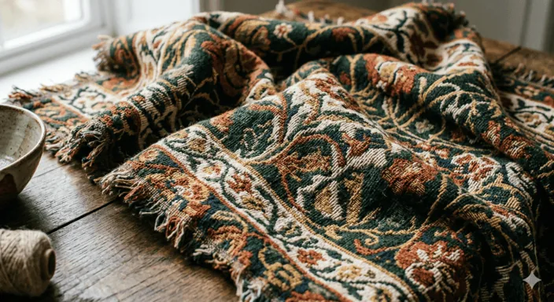
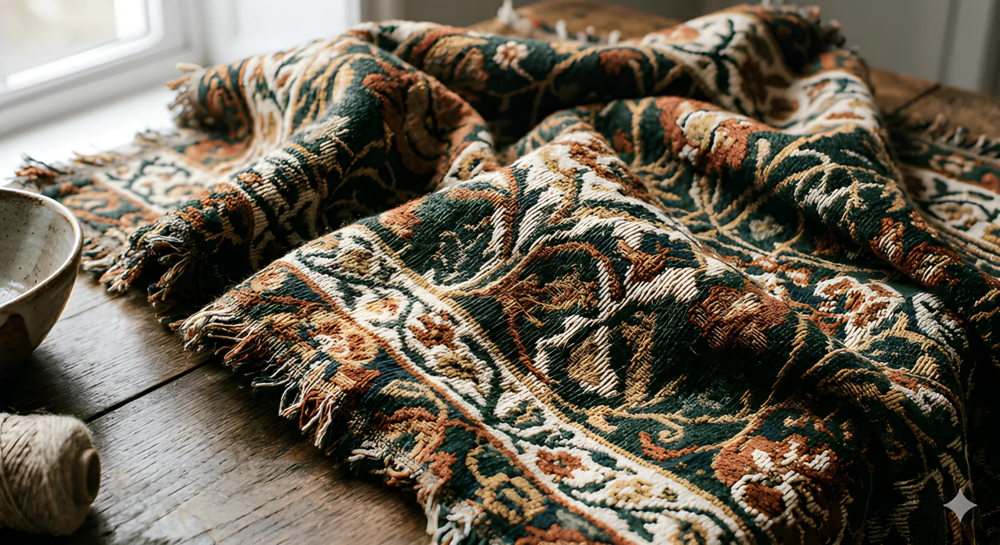

Product Image
Upscale AI
01 — ProblemProduct photos lose sales at low resolution
E-commerce catalogs are full of images that were shot small, compressed hard, or inherited from suppliers. On modern retina displays they look soft — and soft product photos read as low quality products. Reshooting an entire catalog is expensive; generic upscalers smear exactly the details that sell: fabric weave, jewelry facets, edges and color.
The bet: a purpose-built AI upscaler that recovers texture instead of just enlarging pixels, delivered where store owners already work — the browser, the Shopify admin and the WordPress Media Library.
02 — ProductTexture recovery, not just resolution
The core engine upscales product images 2×, 4× or 8× while recovering material detail — fabrics, jewelry, edges, colors — with batch processing across entire catalogs. Free plan to start, no credit card required.
Drag the slider — the after side is the same 704px source photo, upscaled 4×.


03 — PlatformsMeet merchants where they already work
One engine, three front doors — each designed for the workflow of its platform rather than a copy-pasted UI:
- Web platform — upload, enhance and batch-process whole catalogs at productimageupscale.com ↗
- Shopify app — one-click upscaling inside the Shopify admin; JPG, PNG and WebP with batch support, without leaving the store
- WordPress plugin — upscale straight from the Media Library with material-aware texture modes, automatic file replacement and thumbnail regeneration, built for WooCommerce
Distribution was part of the design: the Shopify App Store and the WordPress plugin directory bring merchants to the product instead of the product chasing merchants.
04 — LearningsWhat shipping solo teaches
Owning the full loop — positioning, UI, frontend, backend, review processes for two marketplaces, pricing and support — changes how you design. Every screen gets judged by whether it moves a merchant from upload to purchase-ready image with the least possible thought.
- Marketplace review processes are UX constraints — design for them early
- Batch flows matter more than single-image polish for real catalogs
- The same feature needs three different UIs to feel native on three platforms